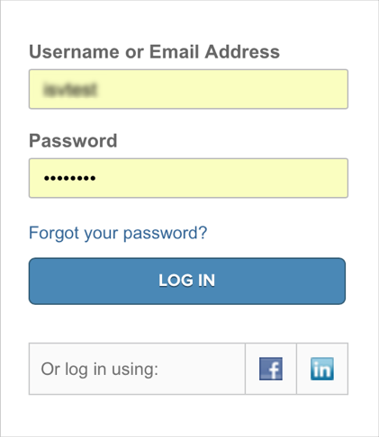
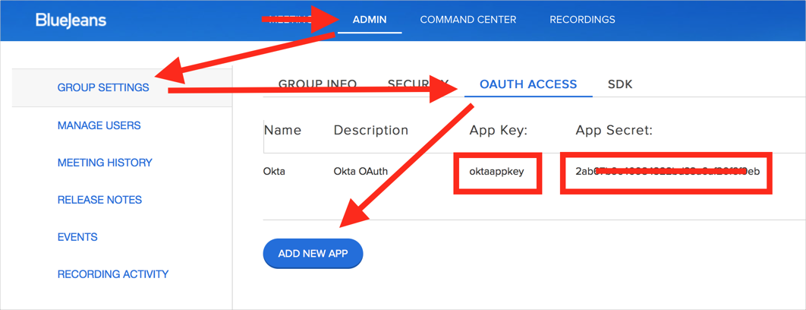

Notes
The BlueJeans Username is read-only in Okta (BlueJeans generates it on provisioning).
BlueJeans shares the same email database across all organizations. Therefore, you will not be able to provision a user with an email address that is already taken.
Deactivation means that a user account will be removed from your organization, but not deleted completely. Note that once you deactivate a user, you will not be able to add it back without contacting BlueJeans Support.
Import New Users
New users created in the third party application will be downloaded and turned in to new AppUser objects, for matching against existing OKTA users.
Import Profile Updates
Import User Schema
Push New Users
New users created through OKTA will also be created in the third party application.
Push Profile Updates
Updates made to the user's profile through OKTA will be pushed to the third party application.
Push Password Updates
Updates made to the user's password through OKTA will be pushed to the third party application.
Push User Deactivation
Deactivating the user or disabling the user's access to the application through OKTA will deactivate the user in the third party application.
Before you start configuring provisioning for BlueJeans, you need to obtain an OAuth Key and Secret from BlueJeans:
Login to BlueJeans as an administrator:
Navigate to Admin > Group Settings > OAuth Access:
Either:
Select an existing app and make note of the App Key and App Secret.
Create a new app by clicking ADD NEW APP and entering values in the Name, Description, and App Key fields, then click Save. An App Secret will be generated for you.
Use the App Key and generated App Secret to configure Provisioning in Okta as described below:
Configure your Provisioning settings for Concur as follows:
Check the Enable provisioning features box.
In the API Authentication, enter the App Key and App Secret obtained from BlueJeans (see Requirements, above).
Click Test API Credentials. If your credentials are valid, you will see a success message:

Scroll down and enable the Provisioning Features you want to use for this app.
Click Next, then click Save.
You can now assign people to the app, if needed.
Because BlueJeans shares the email database across all organizations, provisioning a User with an email address that is already registered in BlueJeans may fail.
In this case, contact BlueJeans Support and request that this email be added to your Organization.